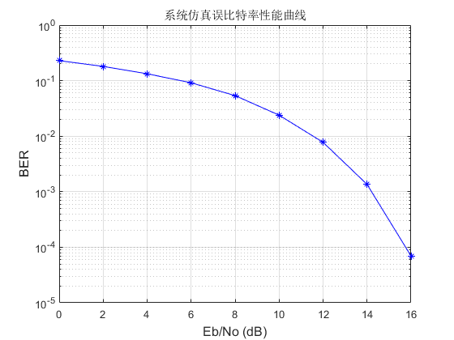

%%%%%功能说明：MIMO+OFDM的基带仿真，画出误码率曲线 %%%%%%本次程序在基带仿真，并没有脉冲成型滤波+上载波这一步 %%%%%%***************** 发送端 *************** %%%%%% 发送端采用Alamouti编码，有2根天线 %%%%%% 有4个用户，每个用户占用的子载波不一样，adpt_mod_para中有用户占用子载波的分配方式AllocMethod %%%%%% 调制方式：每个用户所分配的子载波进行进行相同的调制方式，QPSK/8PSK/16QAM调制/64QAM %%%%%% 信道编码：无 %%%%%% ***************** 信道 *************** %%%%%% 采用高斯白噪声信道，未仿真多径信道 %%%%%% ***************** 接收端 *************** %%%%%% 接收端有2根天线，需要解Alamouti编码 %%%%%% 接收端未考虑做频偏估计、定时估计、信道估计，因为信道比较理想 %%%%%% 与发送端数据比对，并画出误码率曲线 %%%%%% ***************** 程序步骤说明 *************** %%%%%% （1）在每个信噪比下进行仿真，发送10帧信号，一帧为10个OFDM符号，一个OFDM符号的IFFT点数为1024 %%%%%% （2）4个用户共使用600个子载波，24个子载波发送导频，576个子载波发送数据 %%%%%% 因此导频周期是600/24=25，分配给每个用户144子载波 %%%%%% （3）每个用户想发送数据5760bit，因此576bit/OFDM符号，根据调制阶数换算成需要占据的子载波个数 %%%%%% （4）以16QAM为例，576bit = 144个复数符号，需要占144个子载波，与（2）刚好对应上 clear all; close all; N_Tx_ant = 2; %发送天线为2 N_Rx_ant = 2; %接收天线为2 N_user = 4; %用户数为4 N_sym = 10; % 每帧中OFDM符号数,不包括两个前缀OFDM符号 LTE中一帧长度为6~7个OFDM符号 N_frame = 10; % 仿真的帧个数 % 仿真循环开始的Eb_No,定义为每比特的能量Eb % 和噪声的单边功率谱密度No的比值, dB值 Eb_NoStart = 0; Eb_NoInterval = 2; % 仿真Eb/No的间隔值(dB) Eb_NoEnd = 20; % 仿真Eb/No的终止值(dB) %仿真参数选择的是LTE系统带宽为10MHz时参数 %%%%下面这几个变量貌似没有用到 fc = 5e9; % 载波频率(Hz) 5GHz Bw = 20e6; % 基带系统带宽(Hz) 10MHz fs = 15.36e6; % 基带抽样频率 1024*15KHz=15360000Hz T_sample = 1/fs; % 基带时域样点间隔(s) N_subc = 1024; % OFDM 子载波总数，即FFT点数 Idx_used = [-300:-1 1:300]; % 使用的子载波编号，一共使用600个子载波 Idx_pilot = [-300:25:-25 25:25:300]; % 导频子载波编号,导频间隔为24，对应于坐标为0的子载波不映射数据或者导频，为非LTE标准 N_used = length(Idx_used); % 使用的子载波数 600 N_pilot = length(Idx_pilot); % 导频的子载波数 N_data = N_used - N_pilot; % 一个OFDM符号内所有用户发送的数据的子载波数 Idx_data = zeros(1,N_data); N_tran_sym = 0; %前导序列的长度 此处为不添加前导序列 % 得到数据子载波的编号 m = 1; n = 1; for k = 1:length(Idx_used) if Idx_used(k) ~= Idx_pilot(m) Idx_data(n) = Idx_used(k); n = n + 1; else if m ~= N_pilot m = m + 1; end end end % 为编程使用方便,调整子载波编号为从1开始,到子载波总数 length(Idx_used) = length(Idx_pilot) + length(Idx_data) Idx_used = Idx_used + N_subc/2 +1; %使用的子载波坐标 Idx_pilot = Idx_pilot + N_subc/2 +1; %导频子载波坐标 Idx_data = Idx_data + N_subc/2 +1; %数据子载波坐标 PilotValue = ones(N_pilot,1);%导频值为全1 PrefixRatio = 1/4; %循环前缀所占比例，即256个采样点 T_sym = T_sample*( (1 + PrefixRatio)*N_subc );%一个OFDM符号（包含循环前缀）的持续时间 Modulation = 4; %调制方式选择，2--QPSK调制, 3--8PSK,4--16QAM调制,6--64QAM Es = 1; % 在QPSK, 16QAM调制方式下,符号能量都被归一化 Eb = Es/Modulation; % 每比特能量 N_ant_pair = N_Tx_ant * N_Rx_ant; % 收发天线对的数目 ST_Code = 1; % 空时编码： , 1--空时分组码 %%%%%%%%%%%%%%%%%%%%%%%%%%%%%%%%%%%%%%%%%%%%%%%%%%%%%%%%%%%%%%%%%%%%%%%%%%%%%%%%%%%%%%%%%%%%%%%%%%%%%%%%%%%%%%%%%% snr_idx = 1; for Eb_No_dB = Eb_NoStart:Eb_NoInterval:Eb_NoEnd Eb_No = 10^(Eb_No_dB/10); %线性信噪比 var_noise = Eb/(2*Eb_No); % 噪声样点的功率 No为单边功率 No=2*var_noise for frame = 1:N_frame %逐帧循环计算 %%%%%%%%%%%%%%%%%%%%**************** 发送端 **************%%%%%%%%%%%%%%%%%%%%%%%%%%%%%%%%%%%%%% %不添加多径信道，不添加自适应编码，无信道估计等 %%%% 比特产生 [user_bit,user_bit_cnt] = user_bit_gen( N_user, N_data ,N_sym , Modulation );% 多用户数据生成模块，每个用户一帧的数据 %%%% 信道编码,无 coded_user_bit=user_bit;%无信道编码，RS码，卷积码等 %%%% 子载波分配 AllocMethod=1;%相邻分配 [user_subc_alloc,mod_subc,pwr_subc,pad_bit_cnt]=adpt_mod_para(coded_user_bit,N_sym,Idx_data,AllocMethod); TurnOn.AdptMod=0;%无自适应调制 %%%% 按照给定的每用户,每子载波的调制方式,进行调制 mod_sym = modulator(coded_user_bit,user_subc_alloc,mod_subc,pwr_subc,pad_bit_cnt,N_subc,N_sym,TurnOn.AdptMod); %%%% 发送分集, 使用空时编码 st_coded = st_coding( mod_sym,N_Tx_ant,ST_Code); % 加导频 pilot_added = pilot_insert(st_coded,Idx_pilot,PilotValue); % OFDM调制,加循环前缀，加前导序列. 如果使用发送分集,则输出多条天线的信号 %%%%%实际函数中不添加前导序列 [transmit_signal] = ofdm_mod(pilot_added,PrefixRatio,N_subc,N_sym,N_used,Idx_used,N_Tx_ant,N_tran_sym); %%%%%%%%%%%%%%%%%%%%%%%%%%%%%%%%%%%%% 信道 %%%%%%%%%%%%%%%%%%%%%%%%%%%%%%%%%%%%%%%%%%%%%%%%%%%%% transmit_signal_power = var(transmit_signal);%发送信号功率 length_noise=size(transmit_signal,2); noise=gausnoise(Eb_No_dB,transmit_signal_power,length_noise);%产生复噪声序列 recv_signal = transmit_signal+noise;%接收到的信号加噪声 %%%%%%%%%%%%%%%%%%%********************* 接收端 **************%%%%%%%%%%%%%%%%%%%%%%%%%%%%%%%%% for u = 1:N_user % 多个用户接收机的循环 %无信道估计，同步等 % OFDM解调 data_sym = ofdm_demod(recv_signal,PrefixRatio,N_subc,N_sym,N_tran_sym,N_Rx_ant); % 接收机分集处理和空时解码 channel_est = ones(N_subc,1,N_ant_pair);%假设为理想信道，信道估计为全1矩阵 st_decoded = st_decoding( data_sym,channel_est,N_Tx_ant, N_Rx_ant ,ST_Code ,Idx_data);%2X2MIMO % 根据每用户,每子载波的调制方式,进行解调 demod_user_bit = demodulator(st_decoded,user_subc_alloc{u},mod_subc{u},pad_bit_cnt(u),N_sym,TurnOn.AdptMod); %无信道解码, 包括RS解码, 卷积码Viterbi编码等 decoded_user_bit{u}= demod_user_bit; % 本帧,本信噪比下,本用户的性能统计 bit_err = sum(abs(decoded_user_bit{u} - user_bit{u}));%误码率计算 user_bit_err{u}(frame,snr_idx) = bit_err ; end % 多个用户接收机的循环结束 % 实时显示仿真性能 % fprintf('Eb/No:%d dB\tFrame No.:%d Err Bits:%d\n',Eb_No_dB, frame, bit_err); end % OFDM帧/数据包循环结束 snr_idx = snr_idx + 1; end % Eb/No信噪比循环结束 performance_eval;% 画图 %%%%实验结果 %%%本次实验没有信道编码，接收端没有频偏估计、定时同步、信道估计、信道均衡等步骤 %%%误码率无线保存在BER-SNR.fig中